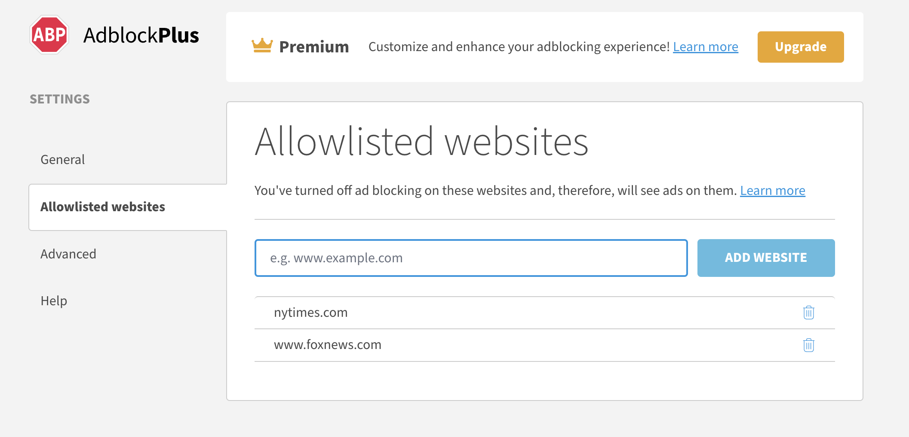

Adblock Plus 完全上手：从弹窗到规则排查的实战教程
从零开始把 Adblock Plus 用起来——安装、弹窗功能、智能白名单、规则冲突调试、图标消失修复，覆盖新手最常遇到的所有卡点
读完这篇教程，你会把 Adblock Plus 从"装完就不管"变成"拦得住、放得开、遇到冲突能自己调试"的广告拦截利器，它的官网上能查到完整的产品介绍，整个过程不需要写一行代码，但你会理解 ABP 背后的规则引擎怎么工作。
准备工作
你需要：
- Chrome、Firefox、Edge 或 Safari 浏览器（ABP 全平台覆盖，以下以 Chrome 为主例）
- 从浏览器的官方扩展商店或直接去下载获取 Adblock Plus（现在叫 Adblock Plus —— free ad blocker，别下成其他同名仿品）
- 大约 10 分钟时间
安装完会自动打开新标签页引导你完成初始设置——跟着走就行，订阅列表默认已经启用了 EasyList 和 Acceptable Ads 两套规则，覆盖了绝大多数场景。
第一步：先认识工具栏弹窗
点一下浏览器右上角拼图图标，找到 ABP 点图钉固定。之后只要你访问任何网页，点 ABP 图标就能看到弹窗——这是你用得最多的界面。
弹窗里四个关键区域
顶部站点状态：显示当前页面 URL，旁边有个大开关。灰色表示当前站点在白名单里（ABP 对它放行），蓝色表示正在拦截。想开想关一键切换，比进设置面板快得多。
中间统计数字：一个大号数字显示从浏览器打开以来 ABP 在当前会话里拦了多少请求。这个数字直观反映了拦截效果——刚装完一般是 0，跑几分钟网页就能跳到几十上百。某些版本还会显示"今日拦截"和"已节省 N 秒加载时间"。
快捷按钮区：齿轮图标进完整设置面板，允许列表按钮跳白名单管理，报告问题按钮打开拦截问题向导（拦过头或拦不住广告时用），禁用/启用按钮切换当前标签页的 ABP 开关。
底部版本号：遇到问题反馈时要提供的版本信息。
Chrome 和 Firefox 的弹窗略有差异——Chrome 多了一个"在当前页面显示统计"的悬浮数字选项，Firefox 弹窗更大、自定义项更多，Safari 弹窗最弱只有白名单开关和设置入口。核心功能是一致的，别纠结长相。

第二步：用好智能白名单
很多人用着用着白名单就失控了——加了十几个网站，一半记不清什么时候加的，排查误伤时根本找不到源头。ABP 默认开启了智能白名单机制，让白名单变成"租约"而非"永久许可"：
- 加一个网站到白名单 → 租 7 天
- 7 天内访问过该站 → 租约自动续到下一个 7 天
- 7 天没碰过 → 租约到期，自动从白名单移除
你去 ABP 设置面板的"允许列表"标签页，能看到每个域名后面都标注了剩余租约时间。这样白名单永远保持精简，过期的自动清掉，不用你手动维护。
想改成永久白名单？
如果你习惯了"白名单就是我要永久支持的网站"，可以关掉智能白名单：设置面板 → 常规设置 → 找到"智能白名单"选项 → 取消勾选。关掉之后所有白名单都不会过期了，但你得自己定期清理。
新手建议保持默认就行——哪天发现白名单里有十几个陌生域名，先关掉智能白名单清一遍，再打开也不迟。
第三步：拦截冲突排查——三个典型场景
ABP 规则引擎有明确的优先级排序，遇到"我写了规则但没生效"或者"我加了白名单但还是被拦"时，对照下面三条就能定位问题。如果你想深挖规则语法细节和完整的调试指南，去adblockplus文档查最准。
场景一：加了白名单还是被拦
这是新手最常碰到的。可能原因有三个：
- 对应的拦截规则带了
$important——$important会压过一切普通规则，包括你的@@例外。去 Network 面板看看被拦的请求悬停提示，能看到是哪条规则拦的。 - 例外规则的域名不够精确——你写了
@@||example.com^，但拦截规则匹配的是||ads.example.com^，范围更大。 - 误伤来自元素隐藏——ABP 的元素隐藏规则（
##）和地址拦截是两套独立体系，@@管不住##。
场景二：Acceptable Ads 放行的广告你想拦
最简单的做法：要么取消勾选 Acceptable Ads 订阅，要么自己写一条 ||广告域名^$important 规则——加了 $important 它就压过 Acceptable Ads 里的 @@ 例外。
场景三：你写的拦截规则不起作用
排查顺序：先检查语法（有没有漏了 || 或结尾的 ^？）→ 确认请求是不是第三方来源（你的规则没覆盖 third-party 吗？）→ 看看有没有带 $important 的 @@ 在放行它 → 最后排除浏览器内置拦截器或其他扩展的冲突。
Chrome 和 Firefox 开发者工具的 Network 面板里，被 ABP 拦掉的请求会显示红色或灰色的 "Blocked" 状态，悬停详情里写着 "Blocked by client"，某些版本还会直接告诉你被哪条规则拦的。Elements 面板里被隐藏的节点会有灰色标记，右侧会提示是哪条 ## 规则干的。
第四步：工具栏图标消失怎么办
ABP 图标找不到了一般有四种症状，逐一排查就行：
图标被收起来了——Chrome 点拼图图标，找到 ABP 点图钉固定；Firefox 右键工具栏空白 → 自定义工具栏 → 拖回来；Safari 查看菜单 → 自定义工具栏。不是被禁用，只是入口藏起来了。
图标灰掉了——扩展被禁用了。Chrome 拼图 → 管理扩展 → 找到 ABP 打开"已启用"开关；Firefox 在地址栏输 about:addons → 扩展 → 启用。禁用原因通常是浏览器更新后临时禁用，或者你之前不小心碰了一下。
扩展管理页里完全找不到 ABP——被卸载或损坏了。重新从商店安装，如果你之前导出过配置文件就导回来。没导出的话，白名单和自定义规则就丢了，只能手动重建。
Chrome 更新后 ABP 整个消失——Chrome 大版本更新（MV2 → MV3 迁移期间）偶尔会清掉旧扩展。去 Web Store 确认 ABP 已更新到 MV3 版本，不行就升级浏览器。
预防很简单——每月导一次配置文件（设置面板 → 导入/导出设置），存个 JSON 文件在本地就行。
Chrome MV3 还有个 Service Worker 休眠问题
Chrome 在 MV3 架构下会在浏览器闲置一段时间后杀掉扩展的 Service Worker。表现是第一次打开新标签页时，拦截可能有几秒延迟，某些需要持续监听的功能短暂失效。这是 Chrome 的设计，目前没完美解法——最新版 ABP 已经做了预唤醒优化，尽量把延迟压到最低。
常见卡点速查
装完了但统计数字一直是 0——要么 ABP 被禁用了（看扩展管理页开关），要么所有订阅都没启用（去设置面板确认 EasyList 在订阅列表里是勾上的）。
想放行一个网站但还是被拦——先确认你加的是正确的域名（有没有手滑写成 https://www.xxx.com 而不是 xxx.com？），再看看有没有 $important 规则在压你的例外。
图标突然没了——90% 是被 Chrome 收进扩展菜单了，点拼图图标找一下就好。真丢了就重装，再导配置文件。
进阶一句话
ABP 还有自定义规则语法（过滤规则的优先级、元素隐藏、$important、@@ 例外）、跨浏览器配置迁移、订阅列表管理等更多玩法，还有更多进阶细节等着挖。平时多看看弹窗里的拦截统计数字，哪天突然从几十跳到几百，说明你该调整一下订阅列表或者加几条自定义规则了。
这套软件的完整资料我同步放在了 GitHub、Gitee 和 GitCode 三个仓库里，国内访问走 Gitee 或 GitCode 更稳，文档维护更新两边都会同步推送。